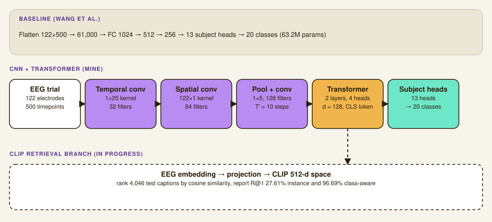

EEG-to-Image Decoding
A CNN and Transformer pipeline that decodes what category of image a subject was looking at from their raw EEG, plus a CLIP-based retrieval task connecting brain signals back to text captions.
Overview
This was my team project for 11-785, Introduction to Deep Learning, built with two teammates on a public multi-subject EEG dataset (Wang et al., 2025). The dataset pairs EEG recordings with the images subjects were looking at when the signal was captured, and we split the work into two tasks: classify which of 20 object categories a subject viewed, and separately, retrieve the matching image caption through a shared embedding space. We divided the build across the team, data pipeline, baseline model, the CNN+Transformer architecture, and the CLIP retrieval pipeline, and worked through the modeling decisions and results together. My own build was the CNN+Transformer model, the more parameter-efficient alternative to the baseline, along with the training infrastructure it ran on.
This writeup reflects our midterm checkpoint. The final phase of the project, mapping EEG directly into CLIP's embedding space for EEG-to-caption retrieval, was still in progress as of this report.

Data & task
Each EEG recording has 122 electrodes sampled at 1000 Hz, bandpass filtered (0.1 to 100 Hz) and notch filtered at 50 Hz, then epoched to the 500 ms after each image appeared, giving a 122x500 matrix per trial. The dataset spans 13 subjects, 5 sessions each, 4 runs of 100 trials per session, 26,000 trials total, across 20 balanced PASCAL VOC categories.
We split by session rather than by trial: sessions 1 through 3 train (15,600 trials), session 4 validates (5,200), session 5 tests (5,200), for every subject. A random trial-level split would let a model cheat by memorizing subject-specific noise instead of learning the actual signal-to-category mapping, since EEG varies a lot between sessions even for the same person.
Architecture
The baseline flattens the 122x500 input to 61,000 dimensions and runs it through three fully connected layers (1024 to 512 to 256) with batch norm and 50% dropout, 63.2M parameters total.
The model I built takes a different approach: a 2D CNN treats the EEG as a single-channel image, a temporal convolution (kernel 25, 32 filters) followed by a spatial convolution across all 122 electrodes (64 filters), then pooling down to 10 timesteps. That feeds a 2-layer Transformer encoder (4 heads, dimension 128, pre-LN, GELU) with a CLS token, so the model learns which electrodes matter together for a given category instead of treating each one in isolation. Both models end in 13 subject-specific prediction heads, since baseline signal characteristics differ enough between people that a shared head underperforms.
The result is 617K parameters against the baseline's 63.2M, about 100x smaller, split roughly 272K in the CNN, 203K in the Transformer backbone, and 142K across the subject heads.
Debugging the pipeline
Two problems took the most time, and both looked like model problems at first.
- A CLIP-alignment fine-tuning run kept failing to warm-start. Diffing the state dicts tensor by tensor showed 77 tensors copied cleanly, 26 with mismatched shapes, and 22 with mismatched names. The root cause was two incompatible CNN architectures, not the training code.
- A four-loss CLIP-alignment run collapsed. Pairwise cosine similarity across the embeddings showed everything converging to nearly the same vector. Reweighting the loss terms fixed it.
Results
Both models clear the 5% chance baseline on 20-way classification. The baseline MLP reached 8.62% test accuracy, matching what the dataset's original paper reports. My CNN+Transformer reached 6.50%, lower in absolute terms but extracting real signal with 100x fewer parameters.
Both models overfit across training, and my Transformer overfit harder despite its size: it reached 32.5% train accuracy against 7.08% validation at its best checkpoint (epoch 22), climbing to 42.6% train by the time we stopped (epoch 32). The baseline's heavier 50% dropout held its train-val gap somewhat tighter. Per-subject test accuracy ranged from 4.50% to 12.25%, sub-03 stayed near chance on both models while sub-17 was consistently the strongest signal. A learning-rate sweep on my model showed the same pattern at every setting, 1e-4 plateaued near chance, 1e-3 was unstable, and the middle ground (5e-4) gave the best validation number but still overfit hard.
Confusion analysis on my model's errors was informative on its own: the most common mistakes were animal-to-animal (dog predicted as cat 41 times, bird as cat 28, horse as cat 28), and "boat" turned up as a false prediction across unrelated categories like train and tvmonitor. That pattern suggests the EEG signal we're extracting encodes coarse, animate-versus-inanimate visual structure more reliably than fine-grained category detail.
CLIP retrieval
The second task treats this as image-caption retrieval instead of classification: pretrained CLIP ViT-B/32 embeds both images and captions, then ranks 4,046 test captions by cosine similarity to establish an upper bound for what EEG-based retrieval could eventually reach.
The gap between those two Recall@1 numbers is the interesting part: CLIP almost always retrieves the right category, but struggles to pick out the exact right image within that category. Since EEG most likely encodes category-level information rather than fine visual detail, that gap sets real expectations for how well the planned EEG-to-caption task can do.
Key finding
Cross-session generalization, not model capacity, was our main bottleneck at this checkpoint. My CNN+Transformer overfits more severely than the much larger baseline MLP, which comes down to weaker dropout on my end and the Transformer's tendency to memorize session-specific temporal patterns rather than the underlying signal. The planned next steps, per our report, were Gaussian noise augmentation and channel dropout during training, and a projection head trained with contrastive loss to map EEG directly into CLIP's embedding space for the final EEG-to-caption task.